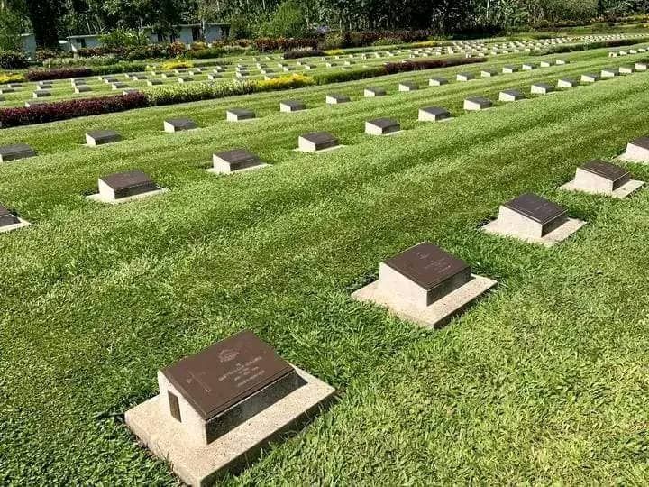

There are places in this world that demand silence. Places where the weight of history is so heavy that words feel inadequate. Bitapaka War Cemetery is one of those places.
Nestled in the lush hills outside Rabaul, this cemetery is the final resting place for soldiers who fought and died during World War II. It is not a place of victory or defeat. It is a place of remembrance—a quiet, sacred space where we honor the lives that were given in the pursuit of peace.

I first visited Bitapaka as a young girl, walking hand in hand with my grandfather. He didn't speak much as we walked among the graves. He didn't need to. The quiet told its own story. Years later, as a guide, I've returned many times. Each visit is different, yet each carries the same weight. The same silence. The same profound sense of gratitude.
A Place of Peace
Bitapaka War Cemetery is located about 30 kilometers from Rabaul, set on a gentle hillside surrounded by tropical forest. The road to the cemetery winds through villages and plantations, past fields of cocoa and coconut. It's a peaceful journey, a slow transition from the bustle of town to the quiet of the countryside.
The cemetery itself is meticulously maintained. Rows of white headstones stretch across manicured lawns, each one marking the grave of a soldier who never returned home. The stones face east, toward the rising sun—a tradition that symbolizes hope and renewal.
At the entrance, a stone cross stands sentinel. Behind it, the Cross of Sacrifice rises against the green hills, a familiar sight in Commonwealth war cemeteries around the world. The words carved into the stone are simple: "Their name liveth for evermore."
Walking through the gates, the noise of the outside world seems to fade away. The only sounds are the rustle of leaves, the distant call of birds, and the occasional whisper of wind through the trees. It is a place designed for reflection, for remembering, for honoring.
The History of Bitapaka
Bitapaka War Cemetery holds the graves of soldiers who died during the Pacific campaign of World War II. Most of them fell during the fighting in New Britain and the surrounding islands, in battles that raged across the jungle, the mountains, and the sea.
The cemetery contains 1,118 Commonwealth burials from the Second World War. Among them are soldiers from Australia, the United Kingdom, Canada, New Zealand, India, and other nations that fought alongside the Allies. There are also graves of soldiers from Papua New Guinea who served in the Pacific Islands Regiment, local men who fought to defend their homeland.
Each headstone tells a story. Some are marked with names, ranks, and regiments. Others bear the simple inscription: "A Soldier of the 1939-1945 War, Known Unto God." These are the graves of men whose bodies were found but whose identities could never be determined. They are remembered, even if their names are not.
As I walk among the stones, I pause at the grave of Private George Whittington, an Australian soldier who was just 21 years old when he died. Next to him lies Sergeant Tomioka, a Japanese soldier who was also 21. Their countries were enemies, but here they rest side by side—a reminder that war takes the young from every side, that loss is universal, that peace is the only victory that truly matters.
Stories Carved in Stone
One of the most moving parts of any visit to Bitapaka is reading the epitaphs. Families, unable to bring their loved ones home, chose words to be carved into the stone. Some are simple: "Loved and remembered always." Others are heartbreaking: "He gave his tomorrow for our today."
There is a grave that always stops me. It belongs to a young Australian pilot, Flight Lieutenant James Morrison. His epitaph reads: "He flew with the eagles. Now he soars with the angels." I imagine his mother, sitting in a house somewhere in Australia, writing those words. I imagine her grief, her pride, her longing for a son who would never come home.
Another grave, near the center of the cemetery, is marked with a small stone carved into the shape of a book. The pages are open, and the inscription reads: "Greater love hath no man than this, that a man lay down his life for his friends."
These words, taken from the Gospel of John, are carved into the graves of soldiers who died in the service of others. They are a reminder that war, for all its horror, can also reveal the best of humanity—courage, selflessness, sacrifice.
Remembering the Local Heroes
Not all the graves at Bitapaka belong to soldiers who came from far away. There is a section of the cemetery dedicated to the men of the Papua New Guinea Infantry Battalion, later known as the Pacific Islands Regiment. These were local men who enlisted to fight alongside Australian and Allied forces.
They were known as "Fuzzy Wuzzy Angels" by the Australian soldiers they helped carry to safety across the treacherous Kokoda Track. Their bravery and compassion became legendary. They carried wounded soldiers through the jungle, often under fire, never leaving a man behind.
One of the graves I visit each time belongs to Corporal John Kila—no relation to our guide John, but a man whose name I have come to know. He was 19 years old when he was killed in action near Rabaul. His epitaph reads: "A son of Papua New Guinea who gave his life for freedom."
I kneel by his grave and say a quiet prayer. I thank him, and all the local soldiers, for defending our home. For showing the world that even the smallest nations can produce heroes.
The Banyan Tree of Remembrance
In the center of the cemetery stands a massive banyan tree, its roots spreading across the lawn like the arms of a protector. The tree is ancient, perhaps hundreds of years old. It would have been here during the war, watching as soldiers fought and fell nearby.
Visitors often leave small tokens at the base of the tree—poppies, notes, photographs. I have seen Australian veterans, their faces weathered with age, standing beneath its branches in silent prayer. I have seen Japanese families, traveling across the ocean to pay their respects to their ancestors. I have seen children, too young to understand the weight of history, leaving flowers at the graves.
Under the banyan tree, the divisions of the past seem to fade. Here, we are not Australians or Japanese or Papua New Guineans. We are simply people, bound together by the recognition that war is costly, that peace is precious, that those who came before us deserve to be remembered.
A Ceremony of Remembrance
On the last day of my most recent visit, I had the honor of witnessing a small ceremony at Bitapaka. A group of Australian veterans had returned to Rabaul, many of them for the first time since the war. They were old men now, their hair white, their steps slow. But their eyes still held the light of the young soldiers they once were.
They gathered around the Cross of Sacrifice as a bugler played the Last Post. The notes floated across the cemetery, clear and pure, calling the fallen to rest. Then came the silence—a full minute of silence that seemed to stretch into eternity.
I watched as one of the veterans, a man named Bill, placed a wreath at the base of the cross. His hands shook as he adjusted the ribbon, but his gaze was steady. When he stepped back, there were tears in his eyes.
"I was 18 when I came here," he said later, his voice barely a whisper. "I lost friends. Good men. I never thought I'd see this place again. But I'm glad I did. They're still here. I can feel them."
Bill and his comrades stood in silence for a long time, looking out over the graves. Then they turned and walked back toward the gates, their steps lighter than before. They had come to say goodbye. They had come to remember. And Bitapaka, as it always does, welcomed them home.
What Bitapaka Teaches Us
I have guided many visitors to Bitapaka over the years. Some come because they have family buried here. Others come to learn about history. Still others come simply to sit in the quiet and reflect.
But whatever brings them, they all leave with something. A deeper understanding of the cost of war. A greater appreciation for peace. A sense of connection to the past that they didn't have before.
Bitapaka teaches us that war is not abstract. It is not just battles and strategies, dates and numbers. War is the young men and women who never got to grow old. It is the families who waited for letters that never came. It is the silence that follows the fighting, the quiet that settles over the graves.
But Bitapaka also teaches us that remembrance is powerful. That by honoring the fallen, we keep their spirits alive. That by telling their stories, we ensure that future generations will remember the price of freedom. That by walking among the graves, we commit ourselves to the work of peace.
A Final Thought
As I write this, I am sitting beneath the banyan tree at Bitapaka. The afternoon sun filters through the leaves, casting dappled shadows across the graves. A gentle breeze rustles the palm fronds. It is quiet. Peaceful.
I think about the soldiers who rest here—Australians, British, New Zealanders, Canadians, Indians, Papua New Guineans. They came from different countries, spoke different languages, worshipped different gods. But they shared a common cause. They fought for freedom. They gave their lives for a better world.
I think about the families who never stopped loving them. The mothers who waited by the door. The fathers who kept their letters. The sweethearts who grew old alone, carrying the memory of a love cut short.
And I think about us, the living. The ones who walk among the graves, who read the epitaphs, who leave flowers and tears and prayers. We are the ones who carry their memory forward. We are the ones who must ensure that their sacrifice was not in vain.
So let us remember. Let us honor. Let us commit ourselves to the work of peace. For Bitapaka is not just a cemetery. It is a promise. A promise that those who died will never be forgotten. That their stories will be told. That their sacrifice will always, always be remembered.
Sarah Wani is a guide and historian at Bismark Touris, specializing in the war history of East New Britain. She believes that understanding the past is essential to building a peaceful future.
🕊️ Want to visit Bitapaka War Cemetery?
Join one of our historical tours to learn about the rich and complex history of World War II in East New Britain.
Book Your Tour →